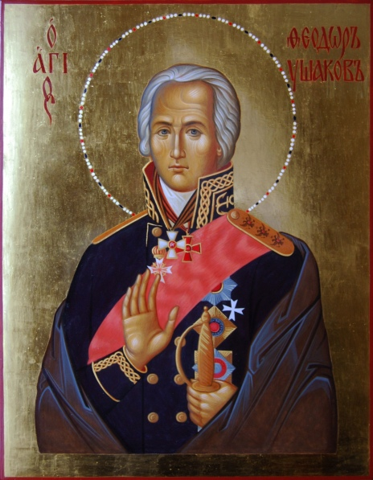
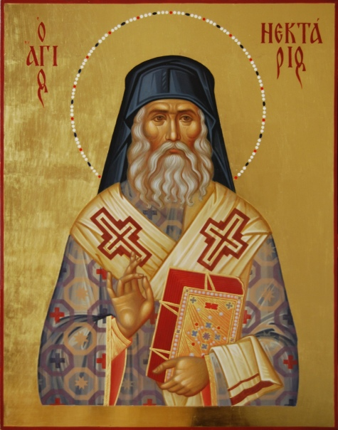

О храме
В сентябре 2011 года по благословению митрополита Санкт-Петербургского и Ладожского была образована православная приходская община в честь святого праведного воина Феодора Ушакова на проспекте Королева, дом 7.
Храм для общины построен и передан в дар епархии строительной компанией «С.Э.Р.» в 2012 году.
16 декабря 2018 года высокопреосвященнейший Варсонофий, митрополит Санкт-Петербургский и Ладожский, освятил храм и совершил иерейскую хиротонию диакона Александра Стебенева.
История храма
РЕКВИЗИТЫ ХРАМА
Получатель: Православная местная религиозная организация Приход храма святого праведного воина Феодора Ушакова на пр. Королева г. Санкт-Петербурга.
ИНН: 7814291552
КПП: 781401001
р/сч: 40703810590200000021 в Дополнительный офис «Лесной» ОАО «БАНК "САНКТ-ПЕТЕРБУРГ"»
кор. сч.: 30101810900000000790
БИК 044030790
престольные и храмовые праздники
Святого праведного воина Феодора Ушакова
5 августа (прославление)
15 октября (преставление)


Святителя Нектария Эгинского
3 сентября
9 ноября